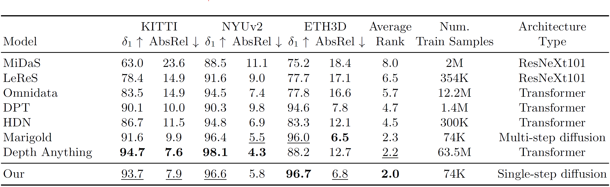

We present PrimeDepth, a method for the utilisation of pre-trained generative models for downstream tasks like monocular depth estimation. We exploit the final image representation of Stable Diffusion and propose a simple method with a natural architectural bias towards processing it. PrimeDepth is pre-trained on unlabelled data and a small set of synthetic labelled data, all while leaving Stable Diffusion untouched. Doing so, we are able to estimate monocular depths in just a single step yielding competitive and detailed depth predictions. The complementary nature of PrimeDepth to the data-driven approach Depth Anything shows in the pixel-wise average of estimated monocular depths of both methods, setting a new state-of-the-art in zero-shot monocular depth estimation.
The gallery below presents images sourced from the internet and the corresponding depth estimates of our PrimeDepth in comparison to current state-of-the-art approaches Depth Anything and Marigold. Utilise the slider and gestures to reveal details on both sides. All results are generated with the default parameters of the corresponding model. The diffusion-based approach Marigold requires 50 steps and ensembles over 10 predictions. In contrast, PrimeDepth uses only one step and no ensembling, allowing for over 100x faster prediction speed.


Instead of the RGB input image, we use the image representation extracted from the last step of Stable Diffusion, i.e. Stable Diffusion Preimage, as it contains a richer feature composition than the RGB image itself. The preimage entails all the intermediate, multi-scale feature maps, cross- and self-attention maps of every neural block. After each block, the extracted feature maps, cross- and self-attention maps are fused and kept at their respective resolution, as illustrated in the figure above.
To exploit the full potential of the preimage, we mirror the architecture of the Stable Diffusion Decoder but with smaller size for the Preimage Refiner. Similar to U-Net skip connections, the refiner receives the fused preimage parts at its respective blocks via concatenation. The mirrored architecture and the successive incorporation of the preimage at the respective blocks yields a natural architectural bias for the processing of the preimage.
To avoid the risk of catastrophic forgetting and altering the image representation, we leave the weights of Stable Diffusion frozen.
The refiner, the depth branch and the segmentation branch are trained simultaneously.
Since the refiner has to be initialised randomly, we pre-train it on a set of pseudo label pairs gathered by running Depth Anything on unlabelled images.
After pre-training, we train on labelled synthetic data composed of Hypersim and Virtual KITTI.
Quantitative comparison of PrimeDepth with depth estimators on several zero-shot benchmarks. Bold numbers are the best, underscored second best. Our method is either the best or second best and outperforms other methods on overall rank with only little training on purely synthetic datasets.

Quantitative comparison of PrimeDepth with state-of-the-art depth estimators on several zero-shot benchmarks including difficult scenarios using a standardised evaluation protocol.
Bold numbers are the best, underscored second best.
Unlike Marigold, our method remains stable under difficult conditions (rabbitai, nuScenes-C), arguably because of the unchanged Stable Diffusion representation.
Overall, Depth Anything, which uses 1.5M labelled training images vs 74K for Marigold and PrimeDepth, performs best with PrimeDepth being the clear runner-up.
Despite the pre-training on Depth Anything pseudo labels, the predictions of PrimeDepth and Depth Anything are complementary.
To demonstrate this, we show results of a simple pixel-wise average combining the predictions of Depth Anything and PrimeDepth.
It improves over both Depth Anything and PrimeDepth, meaning that the two signals are not fully correlated and sets a new state-of-the-art in monocular depth estimation.
For additional qualitative and quantitative results, as well as ablation studies, please refer to the PDF paper linked at the top of this page.
@misc{zavadski2024primedepth,
title={PrimeDepth: Efficient Monocular Depth Estimation with a Stable Diffusion Preimage},
author={Denis Zavadski and Damjan Kalšan and Carsten Rother},
year={2024},
eprint={2409.09144},
archivePrefix={arXiv},
primaryClass={cs.CV},
}